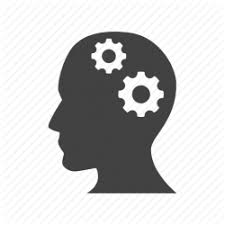

About me
My name is Musaed. I am 22 years old. I am currently in the fouth year of the Computing Science program at University of Alberta, with a 3.6 GPA. Beside academics, I enjoy many habits in life, including horse riding and swimming. My passion for horse riding started when I was 12 years old. I won several competitions in horse jumping and it has tought me persistence. I also enjoy swimming, especially with friends.
 My Professional History
My Professional History
I have had a 3 month internship at a global, multinational company during the summer of 2018, where I worked for the human resources department to collect, analyze, and visualize so that it can be presented.

My Skills
I have knowledge in many areas of Computing Science, including machine learning, artificial integlligence, human-computer interaction, softwarer engineering, database managent, information retrieval over non structured data. Particularly passionoate about machine learning and artificial intelligence
Technical Skills:
SPARQL; Prolog; Lisp; Java; C; Python; HTML; CSS; JavaScript